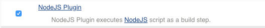
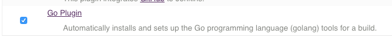
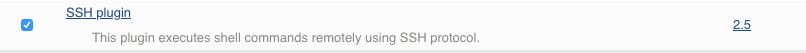

Jenkins configurations
Getting Familiar with Jenkins Console
When you login to jenkins for the first time, following is the screen you would see.

- On the left side of the screen, on top is the menu to create new projects, to manage jenkins, to create users etc.
- Just below the menu is the build queue. All jobs scheduled to run get added to the queue and would appear here.
- Below build queue is the build executor status. This shows the status of the jobs being executed in real time.
- Bottom right of the page is the information about jenkins version displayed.
Configuring Global Security
- Select Manage Jenkins -> Configure Global Security
- Verify
- checkbox for "Enable Security" is checked
- From Security Realm, "Jenkins own database" is selected
- Authorization is set to "Logged in users can do anything"
Observe the configs and verify as per the screenshot attached below

Jenkins Plugins
The real magic of Jenkins lies in its rich plugins eco system. This is how tools integrate with jenkins to build a CI workflow. You want to trigger jenkins jobs after every change going into git, you have a plugin for it. You want to send a notification to your developers on a successful or failed builds, you have a notification plugin. You want to use a tool to fetch or push the build artifacts, you have a plugin for it. This is how most of the tools talk to jenkins.
In this tutorial, we are going to learn a simple process to install plugins. As part of this, we will end us installing a plugin which would help us integrate jenkins with our git repository.
Exploring Plugins Configurations
- From "Manage Jenkins", select "Manage Plugins" option.
- On the Manage Plugins pane you would see the following tabs,
- Updates
- Available
- Installed
- Advanced

Select "Installed" to view the list of the plugins which came pre installed with jenkins.
Installing Plugins
- From "Manage Plugins", select Available tab.
-
On the top-right corner you should see a filter box, start typing the search term in that box. we will need below plugins to be installed for our CI-CD setup.
-
Git Plugin

-
Workspace Cleanup Plugin

-
Maven Plugin
-
NodeJS Plugin 
-
Go Plugin 
-
Git Tag Plugin

-
Ssh Plugin 
-
Artifactory Plugin